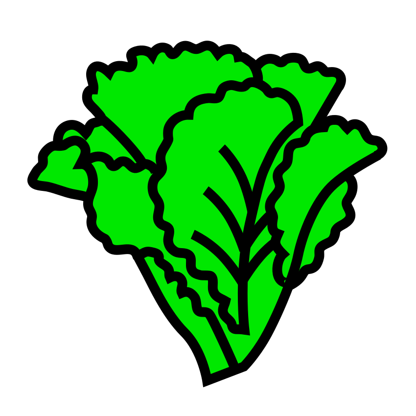
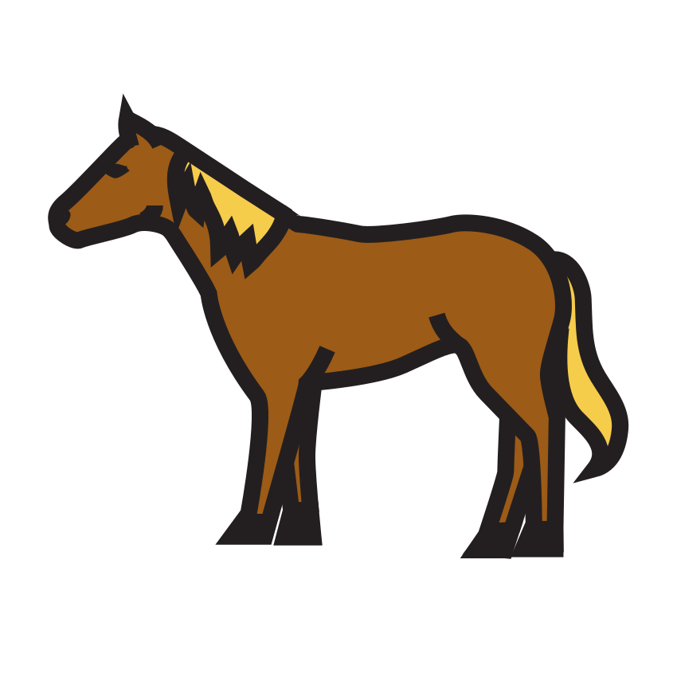
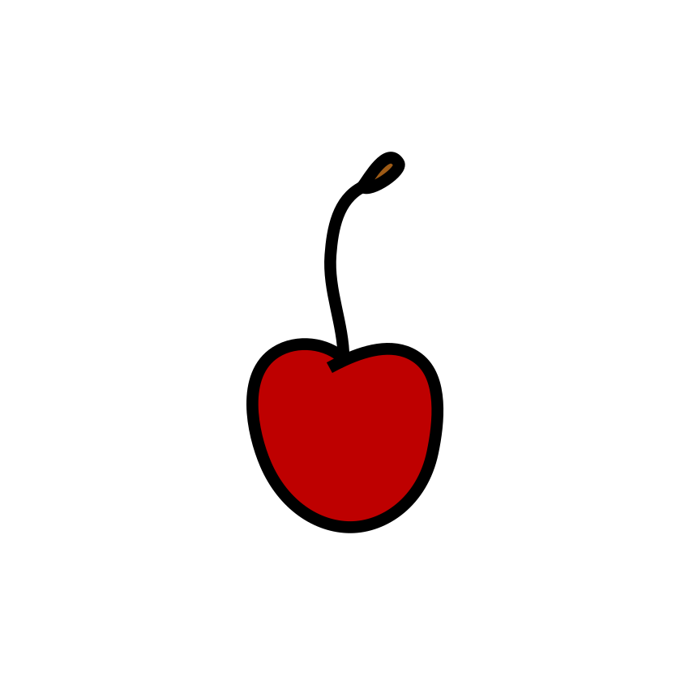
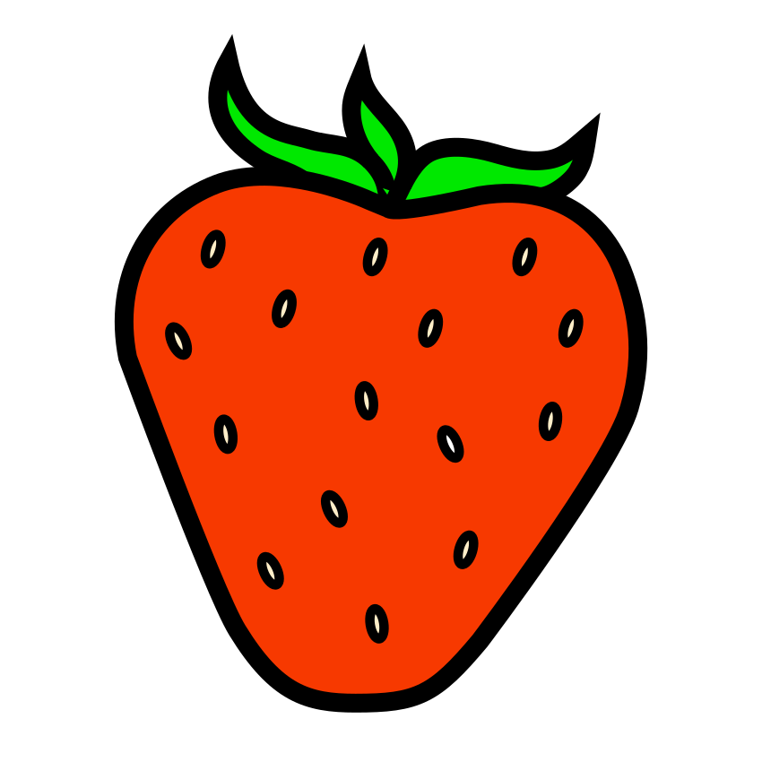
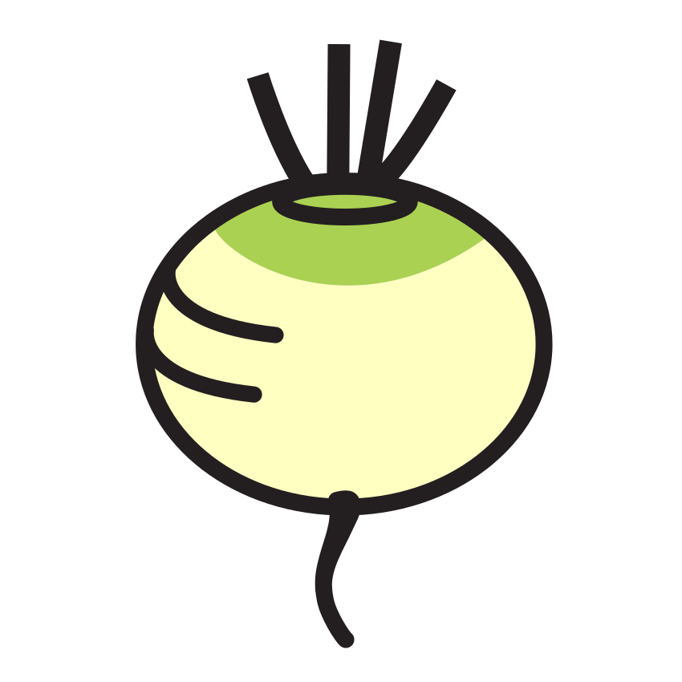
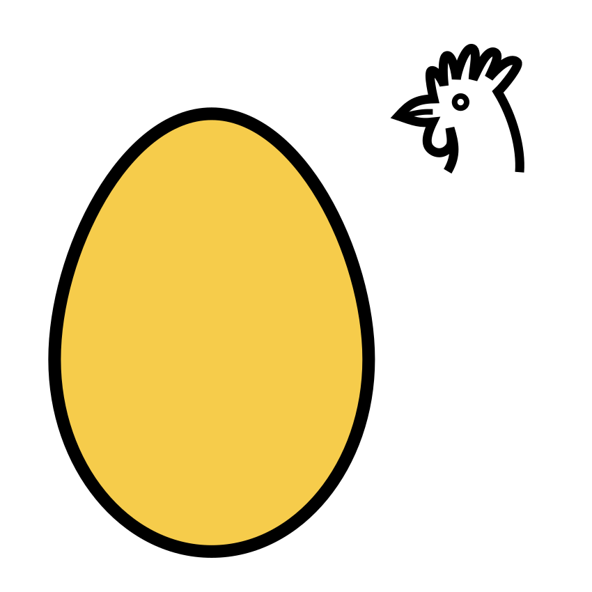
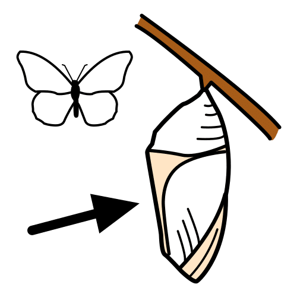
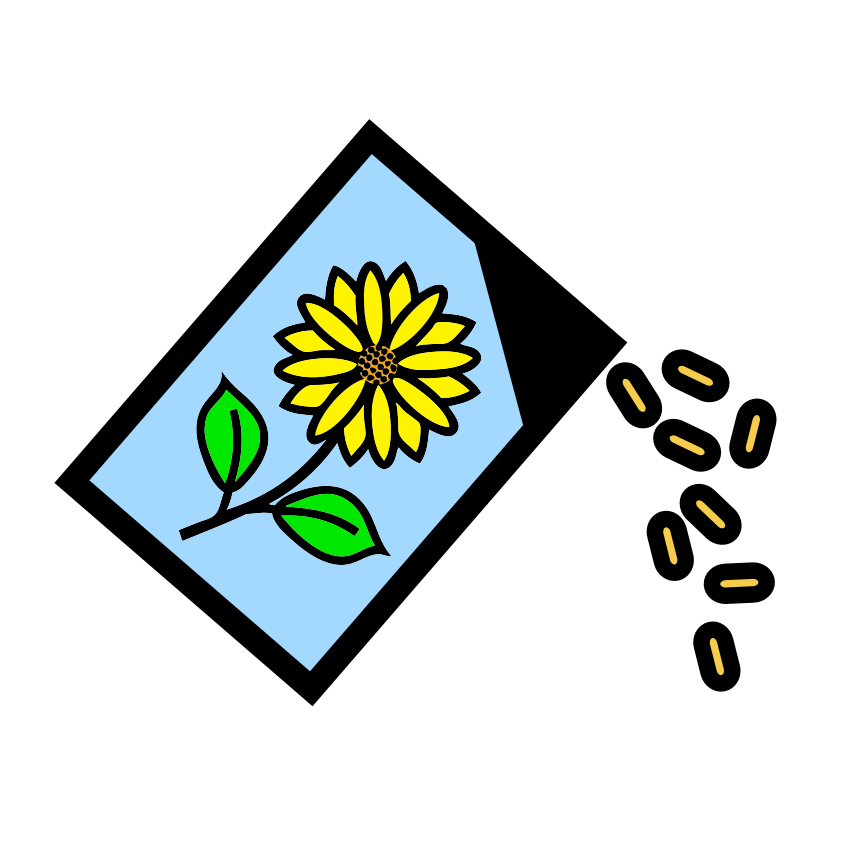
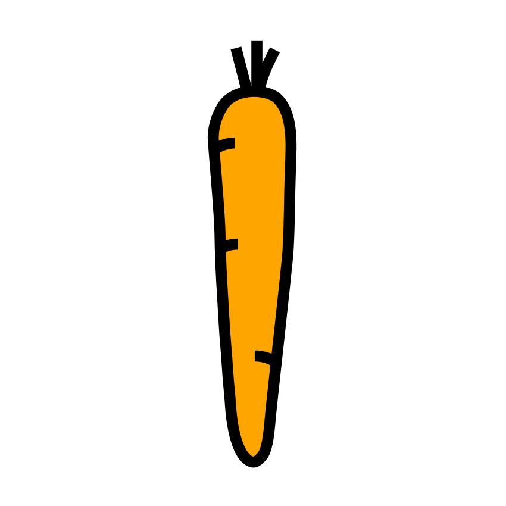
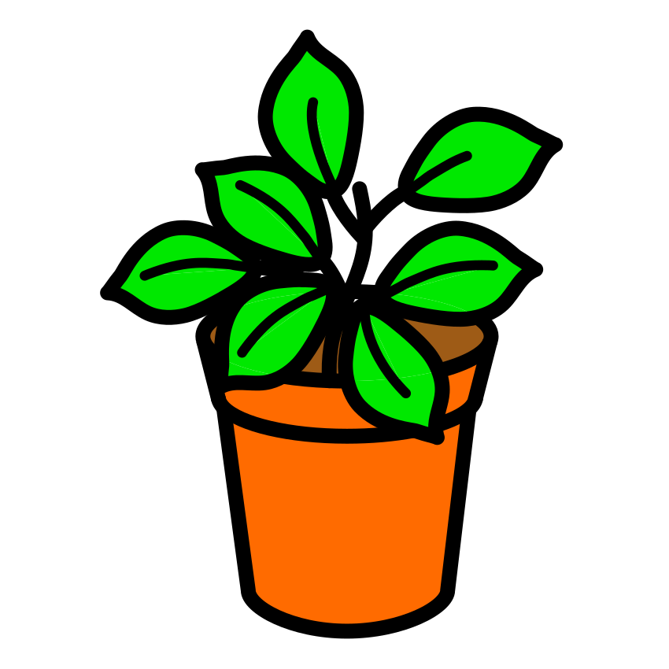

Sous-objectif : discriminer les 4 consonnes qui « soufflent » (prépare la fiche d’évaluation 4.3).
Consigne :1. Relie chaque image à son enclos : l’enclos du « sss » , du « chhh » , du « fff » ou du « vvv » . 2. Entoure les images où tu entends « chhh ». 3. Dans la bande, entoure toutes les lettres « s ».
1

salade

cheval
fleur
vache
tournesol

cerise

fraise
chenille
« sss »
« chhh »
« fff »
« vvv »
2
3
S ss S e z s c S s z e s S
★ Défi : CERISE : entends-tu « sss » au début, au milieu ou à la fin ? Coche : début ☐ · milieu ☐ · fin ☐
Compétence : discriminer les phonèmes fricatifs.Seul ☐ · Avec aide ☐ · À revoir ☐
Prénom : Date :
Période 4 · Entraînement A2
Écrit — reconstitution et encodage
Les étiquettes du potager ★ je m’entraîne
Sous-objectif : composer des mots en écoutant les sons (prépare la fiche d’évaluation 4.7).
Consigne :1-3. Découpe les lettres. Dis chaque mot lentement et colle les lettres dans l’ordre des sons : RADIS, puis TOMATE. Écris ensuite NAVET tout seul. 4. Entoure RADIS chaque fois qu’il est bien écrit.
1 RADIS :
2 TOMATE :
3

NAVET (j’écris seul, la maîtresse aide pour la fin) :
Compétence : encoder des mots transparents.Seul ☐ · Avec aide ☐ · À revoir ☐
Prénom : Date :
Période 4 · Entraînement A3
Écriture cursive — les ponts
Les ponts de la ferme ★ je m’entraîne
Sous-objectif : tracer m, n, p et les enchaîner (prépare la fiche d’évaluation 4.5).
Consigne :1. Suis le modèle écrit au début de chaque ligne et continue. 2. Continue les bandes de ponts et de vagues sans lever le crayon. 3. Entoure ton plus beau pont.
1
modèle : n n n · m m m
modèle : p p p
modèle : une · mon · pomme
modèle : la poule a un nid
2
Compétences : lettres à ponts en cursive ; enchaînements graphiques.Seul ☐ · Avec aide ☐ · À revoir ☐
Prénom : Date :
Période 4 · Entraînement A4
Mathématiques — au-delà de 10
Le grand poulailler ★ je m’entraîne
Sous-objectif : dénombrer au-delà de 10 en s’organisant (prépare la fiche d’évaluation 4.8).
Consigne :1. Compte les poussins (astuce : entoure d’abord un paquet de 10) et écris le nombre. 2. Complète la bande jusqu’à 15. 3. Relie chaque nombre écrit à sa boîte d’œufs. 4. Range les nombres du plus petit au plus grand.
1
Il y a poussins.
2
8
9
11
13
15
3
12
10
14

4
11 · 14 · 9 · 12 · 15 →
Compétences : dénombrer jusqu’à 14 ; suite écrite jusqu’à 15 ; ranger des nombres.Seul ☐ · Avec aide ☐ · À revoir ☐
Prénom : Date :
Période 4 · Entraînement A5
Mathématiques — grandeurs
La balance de la ferme ★ je m’entraîne
Sous-objectif : lire une balance et ordonner des grandeurs (prépare la fiche d’évaluation 4.11).
Consigne :1. Regarde chaque balance : entoure l’objet le plus lourd. 2. Numérote les tuteurs du plus court (1) au plus long (5). 3. Numérote les tournesols du plus petit (1) au plus grand (5).
1
2
3
Compétences : interpréter la balance ; ordonner longueurs et tailles.Seul ☐ · Avec aide ☐ · À revoir ☐
Prénom : Date :
Période 4 · Entraînement A6
Le monde — cycle du papillon
La petite chenille deviendra grande ★ je m’entraîne
Sous-objectif : ordonner les 4 étapes de la métamorphose (prépare la fiche d’évaluation 4.13).
Consigne :1. Numérote les étapes de 1 à 4 (l’œuf est le numéro 1). 2. Vrai ou faux ? Entoure ✓ ou ✗. 3. Fais pareil avec la plante : numérote de 1 à 4, de la graine à la fleur.
1
papillon
chenille
œuf

chrysalide
2
La chenille mange beaucoup de feuilles.
✓
✗
Le papillon redevient une chenille.
✓
✗
Dans la chrysalide, la chenille se transforme.
✓
✗
3
fleur

graine
plante
pousse
★ Défi : comment s’appelle cette transformation ? Dis le grand mot à un adulte (mé-ta-mor-…) et frappe ses syllabes !
Compétence : ordonner un cycle de vie et utiliser son vocabulaire.Seul ☐ · Avec aide ☐ · À revoir ☐
Prénom : Date :
Période 4 · Entraînement B1
Phonologie — vers l’écrit
Du son à la lettre ★★ je consolide
Sous-objectif : écrire la lettre qui fait le son entendu (prépare les fiches d’évaluation 4.3 et 4.7).
Consigne :1. Écris la lettre du premier son de chaque mot. 2. Écris les syllabes : SA, CHO (aide pour CH), FI, VU. 3. Écris les lettres que la maîtresse dicte.
1
salade
fleur
vache
marron
fraise

navet… non, carotte !
souris
tomate
2
SA ·
CHO ·
FI ·
VU
3
Compétence : correspondances phonème-lettre pour les sons continus.Seul ☐ · Avec aide ☐ · À revoir ☐
Prénom : Date :
Période 4 · Entraînement B2
Écrit — encodage autonome
J’écris la liste du marché ★★ je consolide
Sous-objectif : encoder plusieurs mots seul, en s’appuyant sur les sons (prépare la fiche d’évaluation 4.7).
Consigne :1. Écris la liste des courses de la fermière : un mot sous chaque image, une lettre par case. Dis chaque mot lentement avant d’écrire. 2. Entoure TOMATE chaque fois qu’il est bien écrit.
SALADE
TOMATE
MENU (du jour !)
LAIT (la maîtresse aide pour la fin)
2
TOMATETOMATETAMOTETOMATETOMETATOMATE
★ Défi : écris un mot de la ferme que tu choisis toi-même :
Compétence : encoder des mots transparents en autonomie.Seul ☐ · Avec aide ☐ · À revoir ☐
Prénom : Date :
Période 4 · Entraînement B3
Écriture cursive — la phrase
Ma première phrase en attaché ★★ je consolide
Sous-objectif : copier une phrase complète en cursive sur de grandes lignes (prépare les fiches d’évaluation 4.5 et 5.5).
Consigne :1. Écris ton prénom en attaché sans modèle. 2. Copie les phrases écrites par la maîtresse, en allant de gauche à droite. N’oublie pas la majuscule et le point ! 3. Compte les mots de la première phrase et écris le nombre.
1
2
modèle (à la main) : le radis du potager a poussé.
modèle (à la main) : la poule couve dans le nid.
3Nombre de mots :
Compétences : prénom automatisé ; copie de phrase en cursive.Seul ☐ · Avec aide ☐ · À revoir ☐
Prénom : Date :
Période 4 · Entraînement B4
Mathématiques — calculs
Le compte est bon à la ferme ★★ je consolide
Sous-objectif : automatiser compléments à 10 et suite de 2 en 2 (prépare la fiche d’évaluation 4.8).
Consigne :1. Écris les compléments à 10. 2. Complète la suite des poussins (de 2 en 2). 3. Entoure le plus grand nombre de chaque paire. 4. Dominos : dessine les points qui manquent pour faire 10.
Compétences : compléments à 10 ; de 2 en 2 ; comparer des nombres > 10.Seul ☐ · Avec aide ☐ · À revoir ☐
Prénom : Date :
Période 4 · Entraînement B5
Mathématiques — problèmes
Partages à la ferme ★★ je consolide
Sous-objectif : résoudre groupements et partages plus grands (prépare la fiche d’évaluation 4.9).
Consigne :1. Entoure les 14 œufs par boîtes de 2 : combien de boîtes ? 2. Partage 12 graines entre 3 pots en les reliant : combien pour chaque pot ? 3. Chaque lapin reçoit 3 carottes ; il y a 3 lapins : dessine les carottes et écris le total. 4. Entoure les 12 cerises par paquets de 4 : combien de paquets ?
1
boîtes de 2.
2

Chaque pot reçoit graines.
3
En tout : carottes.
4
paquets de 4.
Compétences : groupements par 2 et 3 ; partage équitable.Seul ☐ · Avec aide ☐ · À revoir ☐
Prénom : Date :
Période 4 · Entraînement B6
Mathématiques — tracés et formes
L’architecte de la grange ★★ je consolide
Sous-objectif : tracer à la règle des figures en reliant des points (prépare la fiche d’évaluation 4.10).
Consigne :1. Relie les points à la règle pour dessiner la grange : le grand rectangle, puis le toit en triangle. 2. Continue le pavage de la barrière. 3. Relie les 4 points à la règle pour tracer le carré de l’enclos.
1
2
3
★ Défi : combien de côtés a le toit-triangle de la grange ? Et le mur-rectangle ?
Compétences : tracer à la règle ; continuer un pavage ; décrire les figures.Seul ☐ · Avec aide ☐ · À revoir ☐
Crédits des images
Les illustrations de ce cahier sont des pictogrammes Mulberry Symbols (Paxtoncrafts Charitable Trust, licence CC BY-SA 4.0, mulberrysymbols.org) et des pictogrammes ARASAAC (auteur : Sergio Palao, propriété du Gouvernement d’Aragon, Espagne, licence CC BY-NC-SA, arasaac.org). Merci à leurs auteurs et autrices.
 , du « fff » ou du « vvv »
, du « fff » ou du « vvv »  . 2. Entoure les images où tu entends « chhh ». 3. Dans la bande, entoure toutes les lettres « s ».
. 2. Entoure les images où tu entends « chhh ». 3. Dans la bande, entoure toutes les lettres « s ». vache
vache tournesol
tournesol


 RADIS :
RADIS :
 TOMATE :
TOMATE :